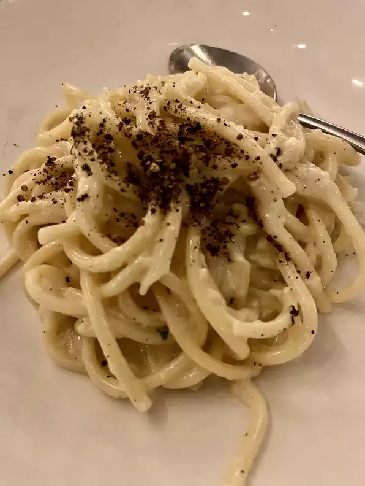

Cacio e Pepe

Description
An incredibly simple dish, requiring only five ingredients.
- 2 (16 ounce) packages dried spaghetti
- 3 ½ cups finely grated Pecorino Romano cheese, or more to taste
- 6 tablespoons unsalted butter, cut into 6 pieces
- 2 teaspoons coarsely ground black pepper
- salt to taste
- Bring a 12-quart pot of heavily salted water to a boil over high heat. Cook spaghetti in the boiling water, stirring occasionally, until tender yet firm to the bite, about 12 minutes. Drain pasta, reserving 2 cups of cooking water.
- Return pasta and cooking water to the pot over low heat. Add 3 1/2 cups Pecorino Romano cheese, butter, and pepper. Stir until cheese has melted and formed a creamy sauce, about 5 minutes. Season with salt.
- Serve with additional cheese, if desired.